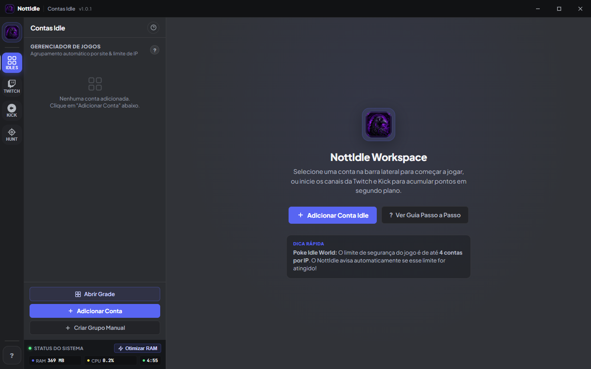
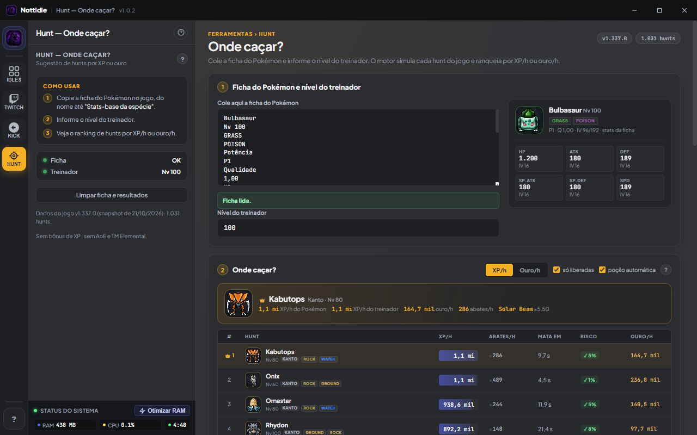
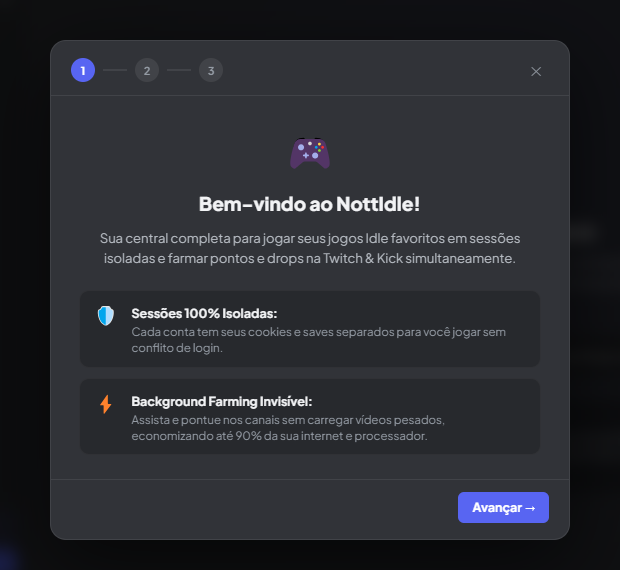

Multi-contas isoladas
Cada conta com sessão, cookies e extensões próprios. Grupos, presets e divisórias para organizar tudo.
v1.0.2 Windows 10/11
O NottIdle junta contas idle, farm de pontos na Twitch e na Kick, grade multi-conta e a Hunt em um app leve para Windows — sem anúncios, sem plano pago e com atualização automática.
~74 MB · instalação por usuário · sem administrador

Sem anúncios
Sem plano pago
Dados ficam na sua máquina
Atualiza sozinho
Recursos
Feito para quem abre várias contas ao mesmo tempo e quer que o farm continue enquanto faz outra coisa.
Cada conta com sessão, cookies e extensões próprios. Grupos, presets e divisórias para organizar tudo.
Pontos em segundo plano, reconexão automática e bloqueio de imagens para economizar banda.
Presets de layout, reordenação, foco com áudio e modo Solo para assistir uma conta por vez.
Motor do PokéIdle rodando localmente, com progresso salvo, cache e sprites offline.
Instale extensões da Chrome Web Store direto na sessão da conta, sem tocar no seu Chrome.
Aviso na barra de título e instalação em um clique, preservando contas, canais e configurações.
Por dentro
Grade, cards, status ao vivo, assistente de primeiro acesso e a Hunt com ranking por XP/h e ouro/h.


Apoie o projeto
O app é gratuito, sem anúncios e sem versão paga. O apoio cobre domínio, licenças, ferramentas e as horas de teste que ninguém vê — e mantém as atualizações saindo.
Me pague um caféPix via LivePix · doação única, sem assinatura. Você escolhe o valor.
Prefere ajudar de outro jeito? Compartilhe o site com quem também farma ou mande seu feedback pelo GitHub.
Instalação
O botão leva direto para o arquivo da última release no GitHub. Nada de espelhos ou downloads de terceiros.
Instalação por usuário, sem administrador. O atalho aparece no Menu Iniciar.
Faça login na Twitch e na Kick, adicione canais e monte sua grade. O assistente mostra o resto.
Dúvidas
Sim. Não tem anúncios, assinatura nem versão paga. O projeto é mantido com apoio voluntário.
Só para farmar pontos. Você pode instalar e explorar o app sem conectar nada — as contas ficam salvas apenas na sua máquina.
Em %APPDATA%\NottIdle: contas, canais, cookies e progresso. Nada é enviado para servidores do projeto. Faça backup dessa pasta de vez em quando.
Sim. Cada conta roda em uma sessão isolada, com cookies e extensões próprios, e você organiza tudo em grupos e presets de grade.
Sim. O farm roda em segundo plano e o app tenta reconectar sozinho quando um canal cai ou a janela é recriada.
O app verifica o GitHub Releases sozinho, baixa em segundo plano e mostra um aviso na barra de título. A instalação preserva contas, canais e configurações.
Não. O NottIdle usa recursos do Electron 33 e é distribuído apenas para Windows 10/11 de 64 bits.
Não. É um projeto independente, sem vínculo, endosso ou patrocínio dessas plataformas.